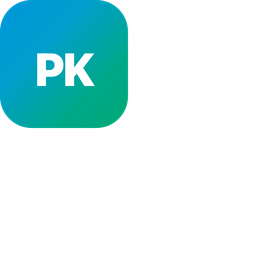

PK-Bayes
CDSS v3.2 · Pitch Institucional
01 / 14
Notas
Atajos
Fullscreen
Descargar PPTX (1.1 MB)
Volver al Sitio
❮
❯
NOTAS DE ORADOR
Cargando notas de la diapositiva...
Atajos de Teclado
✕
Siguiente Diapositiva
→
o
Espacio
Diapositiva Anterior
←
Alternar Pantalla Completa
F
Alternar Notas de Orador
N
Cerrar Ventana / Salir
Esc
Ver esta Ayuda
?